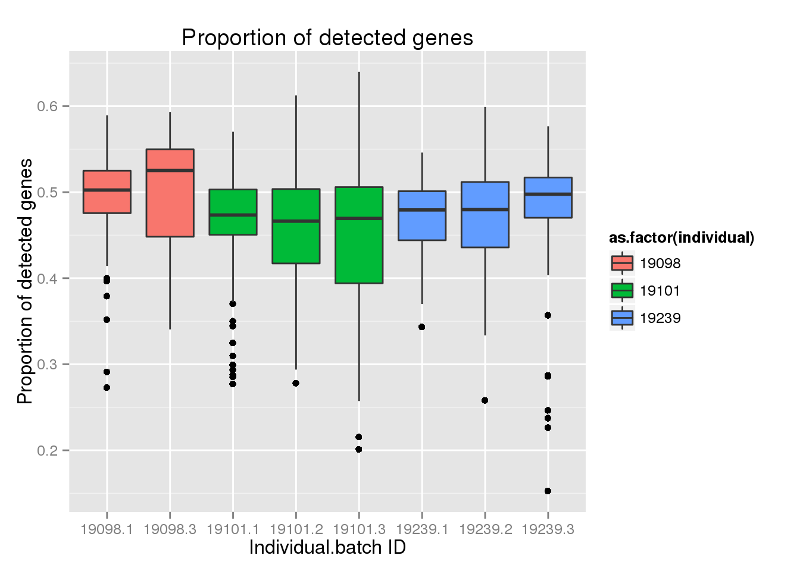
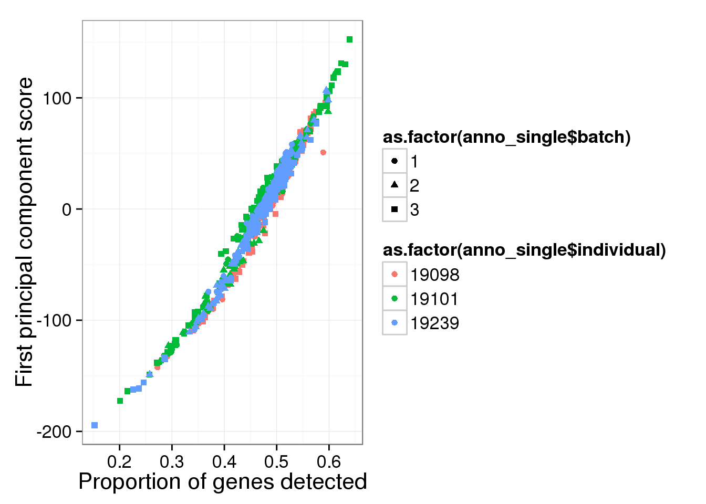
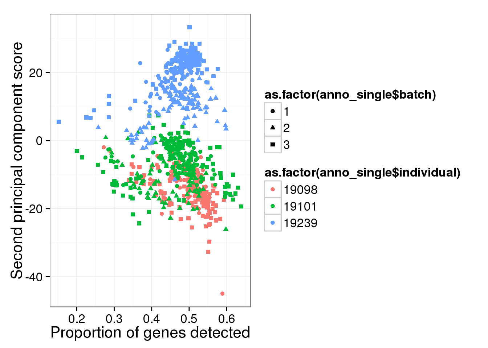
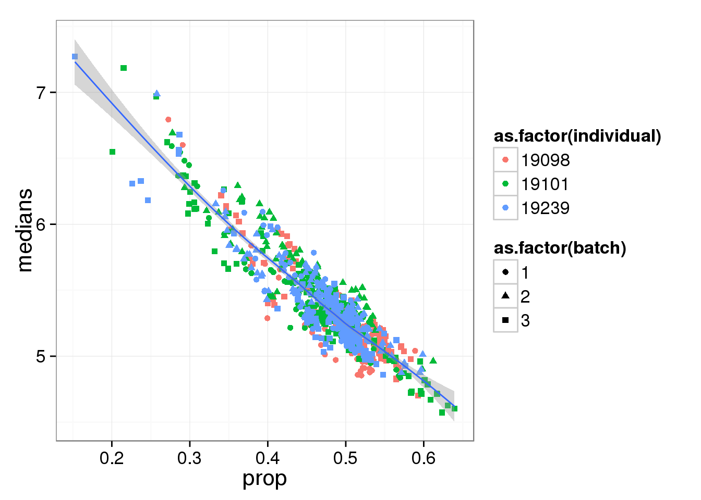
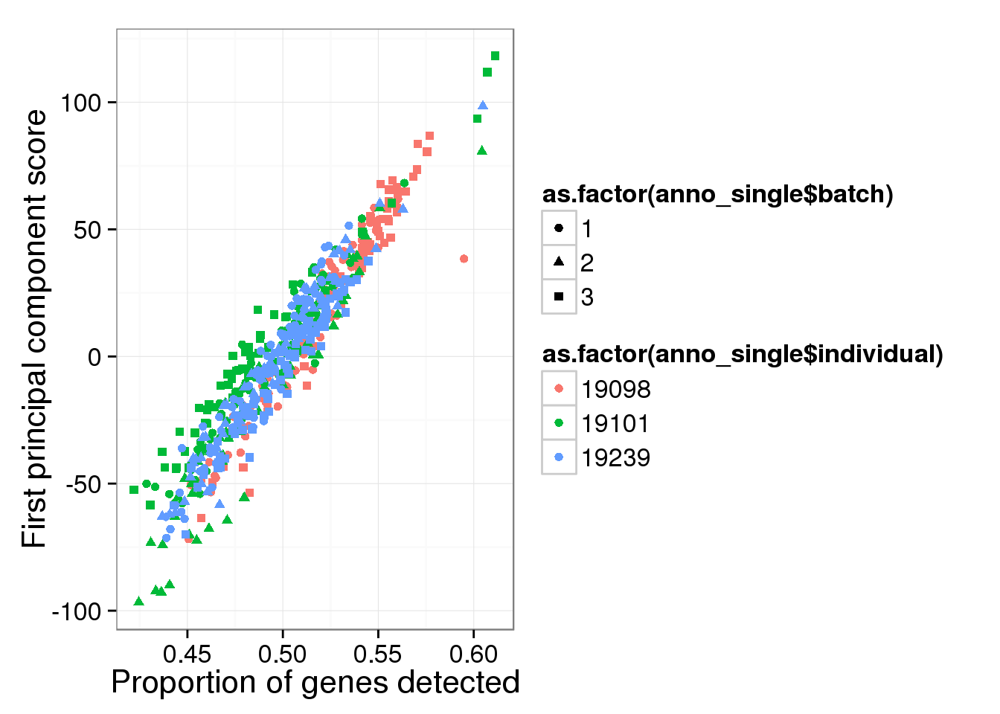
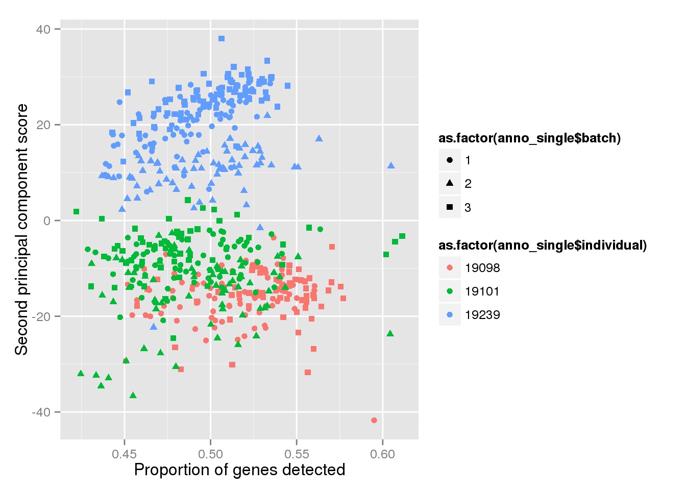
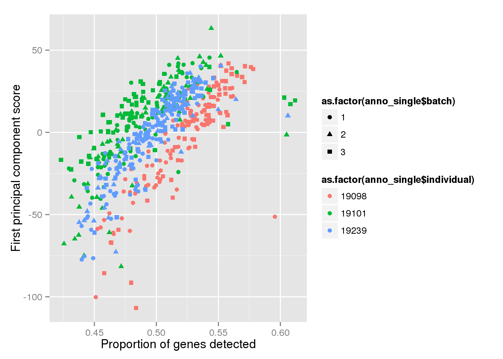
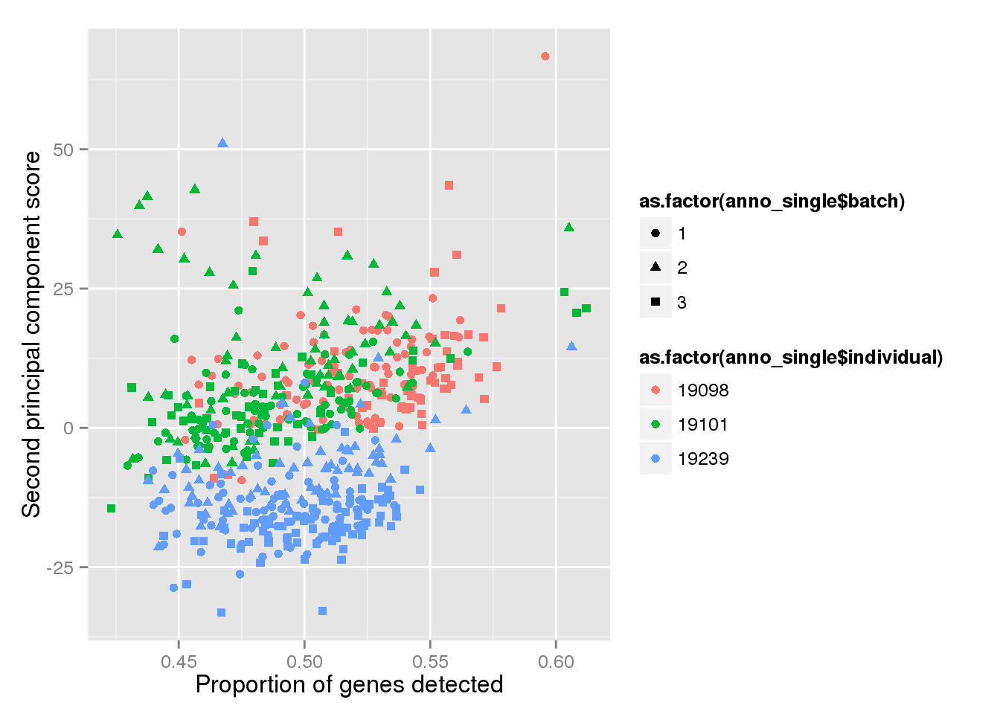

Proportion of genes detected
Joyce Hsiao
2015-09-01
Last updated: 2015-09-10
Code version: e1c7de23b7d323b4ad7620051f93ce06b17077d5
Setup
source("functions.R")
library("limma")
library("edgeR")
library(ggplot2)Prepare single cell molecule data
Input annotation
anno <- read.table("../data/annotation.txt", header = TRUE,
stringsAsFactors = FALSE)Input molecule counts
molecules <- read.table("../data/molecules.txt", header = TRUE,
stringsAsFactors = FALSE)Input read count
reads <- read.table("../data/reads.txt", header = TRUE,
stringsAsFactors = FALSE)Remove batch 2 of individual 19098.
molecules_no <- molecules[, !(anno$individual == 19098 & anno$batch == 2)]
reads_single <- reads[, !(anno$individual == 19098 & anno$batch == 2)]
anno_no <- anno[!(anno$individual == 19098 & anno$batch == 2), ]
stopifnot(ncol(molecules_no) == nrow(anno_no))Remove bulk samples.
molecules_single <- molecules_no[, anno_no$well != "bulk"]
anno_single <- anno_no[anno_no$well != "bulk", ]
stopifnot(ncol(molecules_single) == nrow(anno_single))Remove genes with zero count in the single cells
expressed_single <- rowSums(molecules_single) > 0
molecules_single <- molecules_single[which(expressed_single), ]
reads_single <- reads_single[expressed_single, ]Molecule count data before QC filtering
require(matrixStats)Loading required package: matrixStats
matrixStats v0.14.0 (2015-02-13) successfully loaded. See ?matrixStats for help.number_nonzero_cells <- colSums(molecules_single != 0)
number_genes <- dim(molecules_single)[1]
molecules_prop_genes_detected <-
data.frame(prop = number_nonzero_cells/number_genes,
individual = anno_single$individual,
individual.batch = paste(anno_single$individual,
anno_single$batch, sep = "."))
ggplot(molecules_prop_genes_detected,
aes(y = prop, x = as.factor(individual.batch))) +
geom_boxplot( aes(fill = as.factor(individual)) ) +
labs(x = "Individual.batch ID",
y = "Proportion of detected genes",
title = "Proportion of detected genes")
Principal component analysis on log2 transformed values. We avoid log of 0’s by add 1’s. In addition, our PCA analysis requires that every gene needs to be present in at least one of the cells.
molecules_single_log2_pca <- run_pca( log2( molecules_single + 1 ) )
qplot(y = molecules_single_log2_pca$PCs[,1],
x = molecules_prop_genes_detected$prop,
shape = as.factor(anno_single$batch),
colour = as.factor(anno_single$individual),
xlab = "Proportion of genes detected",
ylab = "First principal component score") 
qplot(y = molecules_single_log2_pca$PCs[,2],
x = molecules_prop_genes_detected$prop,
shape = as.factor(anno_single$batch),
colour = as.factor(anno_single$individual),
xlab = "Proportion of genes detected",
ylab = "Second principal component score") 
Compute median of gene expression of non-zero measurements.
require(matrixStats)
molecules_single_log2_cpm <- molecules_single
molecules_single_log2_cpm[molecules_single_log2_cpm==0] <- NA
libsize <- colSums(molecules_single_log2_cpm, na.rm = TRUE)
molecules_single_log2_cpm <- log2( 10^6 * t(t(molecules_single_log2_cpm)/libsize) )
molecules_median_expression <-
apply(molecules_single_log2_cpm, 2,
function(per_cell) { median(per_cell[per_cell!=0],
na.rm = TRUE) })molecules_df <- data.frame(medians = molecules_median_expression,
prop = molecules_prop_genes_detected$prop,
individual = anno_single$individual,
batch = anno_single$batch,
individual.batch = paste(anno_single$individual,
anno_single$batch, sep = "."))
ggplot(molecules_df, aes(y = medians, x = prop) ) +
geom_point( aes(shape = as.factor(batch),
colour = as.factor(individual) ) ) +
stat_smooth(method = "loess") +
labs( xlab = "Proportion of genes detected",
ylab = "Median expression of non-zero cells (log2 CPM)")
Molecule count data of quality single cells
Input list of quality single cells
quality_single_cells <- scan("../data/quality-single-cells.txt", what = "character")Keep only the single cells that pass the QC filters. This also removes the bulk samples
reads_single <- reads_single[, colnames(reads_single) %in% quality_single_cells]
molecules_single <- molecules_single[, colnames(molecules_single) %in% quality_single_cells]
anno_single <- anno_single[anno_single$sample_id %in% quality_single_cells, ]
stopifnot(ncol(molecules_single) == nrow(anno_single),
colnames(molecules_single) == anno_single$sample_id)Remove genes with greater than or equal to 1,024 molecules in at least one of the cells
overexpressed_genes <- rownames(molecules_single)[ apply(molecules_single, 1,
function(x) any(x >= 1024))]
molecules_single <- molecules_single[!(rownames(molecules_single) %in% overexpressed_genes), ]Remove genes with zero count in the single cells
molecules_single <- molecules_single[which(rowSums(molecules_single) > 0), ]
reads_single <- reads_single[rowSums(reads_single) > 0, ]The observations below were the same before removing genes with greater than or equal to 1,024 molecules in at least one of the cells.
require(matrixStats)
number_nonzero_cells <- colSums(molecules_single != 0)
number_genes <- dim(molecules_single)[1]
molecules_prop_genes_detected <-
data.frame(prop = number_nonzero_cells/number_genes,
individual = anno_single$individual,
individual.batch = paste(anno_single$individual,
anno_single$batch, sep = "."))
ggplot(molecules_prop_genes_detected,
aes(y = prop, x = as.factor(individual.batch))) +
geom_boxplot( aes(fill = as.factor(individual)) ) +
labs(x = "Individual.batch ID",
y = "Proportion of detected genes",
title = "Proportion of detected genes")
Principal component analysis on log2 transformed values. We avoid log of 0’s by add 1’s. In addition, our PCA analysis requires that every gene needs to be present in at least one of the cells.
molecules_single_log2_pca <- run_pca( log2( molecules_single + 1 ) )
qplot(y = molecules_single_log2_pca$PCs[,1],
x = molecules_prop_genes_detected$prop,
shape = as.factor(anno_single$batch),
colour = as.factor(anno_single$individual),
xlab = "Proportion of genes detected",
ylab = "First principal component score") 
qplot(y = molecules_single_log2_pca$PCs[,2],
x = molecules_prop_genes_detected$prop,
shape = as.factor(anno_single$batch),
colour = as.factor(anno_single$individual),
xlab = "Proportion of genes detected",
ylab = "Second principal component score") 
Compute median of gene expression of non-zero measurements.
require(matrixStats)
molecules_single_log2_cpm <- molecules_single
molecules_single_log2_cpm[molecules_single_log2_cpm==0] <- NA
libsize <- colSums(molecules_single_log2_cpm, na.rm = TRUE)
molecules_single_log2_cpm <- log2( 10^6 * t(t(molecules_single_log2_cpm)/libsize) )
molecules_median_expression <-
apply(molecules_single_log2_cpm, 2,
function(per_cell) { median(per_cell[per_cell!=0],
na.rm = TRUE) })molecules_df <- data.frame(medians = molecules_median_expression,
prop = molecules_prop_genes_detected$prop,
individual = anno_single$individual,
batch = anno_single$batch,
individual.batch = paste(anno_single$individual,
anno_single$batch, sep = "."))
ggplot(molecules_df, aes(y = medians, x = prop) ) +
geom_point( aes(shape = as.factor(batch),
colour = as.factor(individual) ) ) +
stat_smooth(method = "loess") +
labs( xlab = "Proportion of genes detected",
ylab = "Median expression of non-zero cells (log2 CPM)")
Read count data of quality single cells
require(matrixStats)
number_nonzero_cells <- colSums(reads_single != 0)
number_genes <- dim(reads_single)[1]
reads_prop_genes_detected <-
data.frame(prop = number_nonzero_cells/number_genes,
individual = anno_single$individual,
individual.batch = paste(anno_single$individual,
anno_single$batch, sep = "."))
ggplot(reads_prop_genes_detected,
aes(y = prop, x = as.factor(individual.batch))) +
geom_boxplot( aes(fill = as.factor(individual)) ) +
labs(x = "Individual.batch ID",
y = "Proportion of detected genes",
title = "Proportion of detected genes in read count data")
Principal component analysis on log2 transformed values. We avoid log of 0’s by add 1’s. In addition, our PCA analysis requires that every gene needs to be present in at least one of the cells.
reads_log2_pca <- run_pca( log2( reads_single + 1 ) )
qplot(y = reads_log2_pca$PCs[,1],
x = reads_prop_genes_detected$prop,
shape = as.factor(anno_single$batch),
colour = as.factor(anno_single$individual),
xlab = "Proportion of genes detected",
ylab = "First principal component score") qplot(y = reads_log2_pca$PCs[,2],
x = reads_prop_genes_detected$prop,
shape = as.factor(anno_single$batch),
colour = as.factor(anno_single$individual),
xlab = "Proportion of genes detected",
ylab = "Second principal component score") 
Compute median of gene expression of non-zero measurements.
require(matrixStats)
reads_single[reads_single==0] <- NA
reads_libsize <- colSums(reads_single, na.rm = TRUE)
reads_cpm <- log2( 10^6 * t(t(reads_single)/reads_libsize) )
reads_median_expression <-
apply(reads_cpm, 2,
function(per_cell) { median(per_cell[per_cell!=0],
na.rm = TRUE) })reads_df <- data.frame(medians = reads_median_expression,
prop = reads_prop_genes_detected$prop,
individual = anno_single$individual,
batch = anno_single$batch,
individual.batch = paste(anno_single$individual,
anno_single$batch, sep = "."))
ggplot(reads_df, aes(y = medians, x = prop) ) +
geom_point( aes(shape = as.factor(batch),
colour = as.factor(individual) ) ) +
stat_smooth(method = "loess") +
labs( xlab = "Proportion of genes detected",
ylab = "Median expression of non-zero cells (log2 CPM)")
Session information
sessionInfo()R version 3.2.0 (2015-04-16)
Platform: x86_64-unknown-linux-gnu (64-bit)
locale:
[1] LC_CTYPE=en_US.UTF-8 LC_NUMERIC=C
[3] LC_TIME=en_US.UTF-8 LC_COLLATE=en_US.UTF-8
[5] LC_MONETARY=en_US.UTF-8 LC_MESSAGES=en_US.UTF-8
[7] LC_PAPER=en_US.UTF-8 LC_NAME=C
[9] LC_ADDRESS=C LC_TELEPHONE=C
[11] LC_MEASUREMENT=en_US.UTF-8 LC_IDENTIFICATION=C
attached base packages:
[1] stats graphics grDevices utils datasets methods base
other attached packages:
[1] testit_0.4 matrixStats_0.14.0 ggplot2_1.0.1
[4] edgeR_3.10.2 limma_3.24.9 knitr_1.10.5
loaded via a namespace (and not attached):
[1] Rcpp_0.12.0 magrittr_1.5 MASS_7.3-40 munsell_0.4.2
[5] colorspace_1.2-6 stringr_1.0.0 plyr_1.8.3 tools_3.2.0
[9] grid_3.2.0 gtable_0.1.2 htmltools_0.2.6 yaml_2.1.13
[13] digest_0.6.8 reshape2_1.4.1 formatR_1.2 evaluate_0.7
[17] rmarkdown_0.6.1 labeling_0.3 stringi_0.4-1 scales_0.2.4
[21] proto_0.3-10